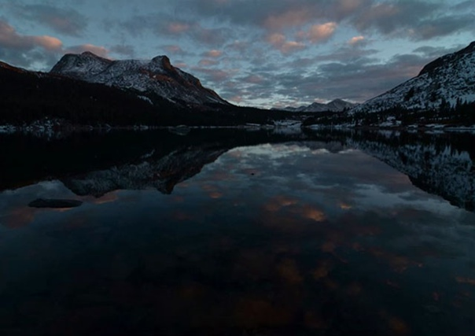
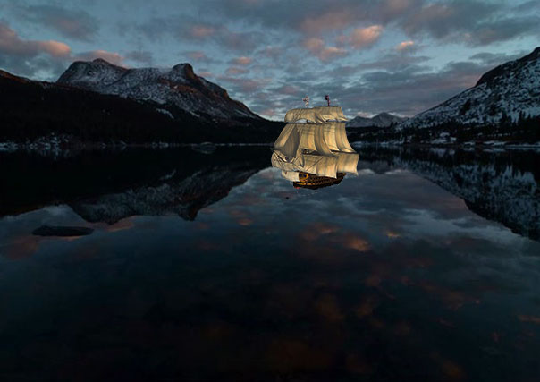
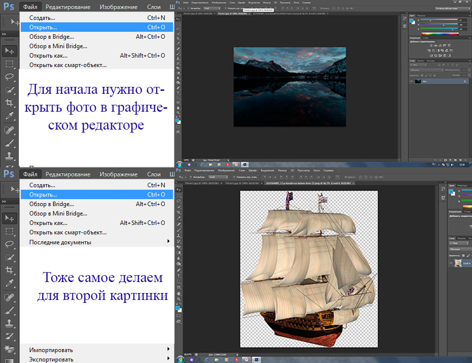
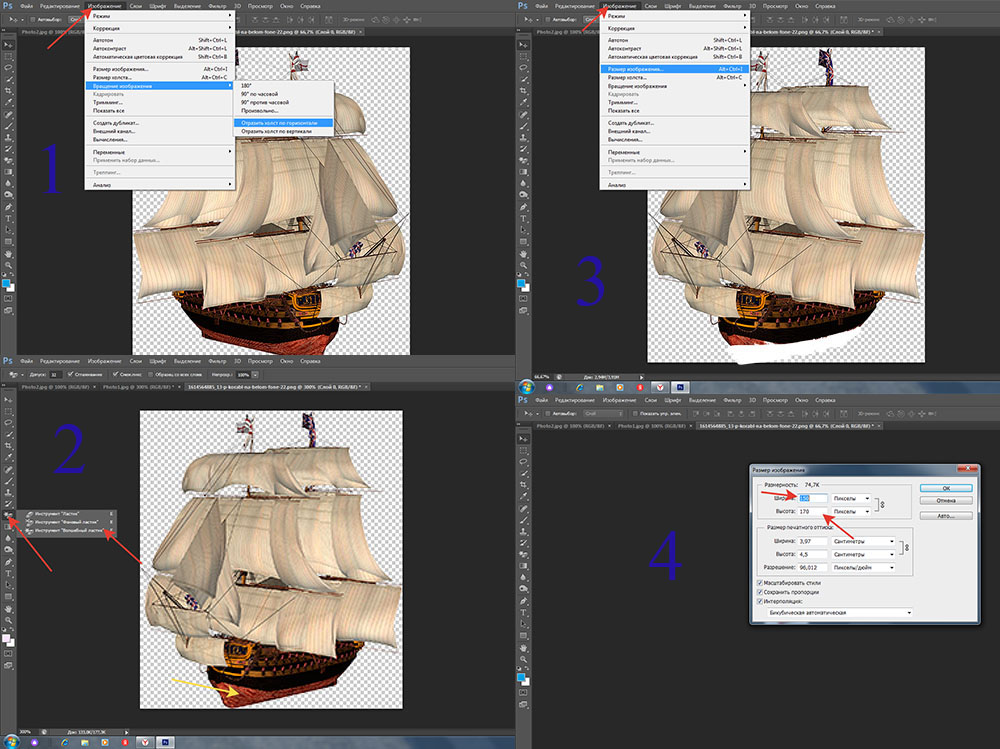
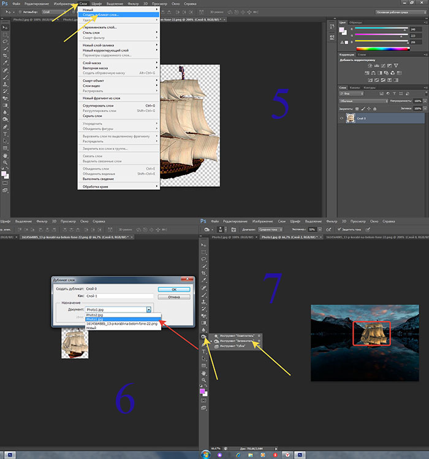

Обработка фото
 
 
1) начнем с того, что нам нужно отразить фото по горизонтали.
2) уберём дно корабля, чтобы корабль не просто лежал на фото, как бы плыл в этом водоеме.
3-4) уменьшим размеры корабля, чтобы он помещялся в будующее море.
5-6) чтобы корабль очутился в море, нужно дублировать слой во второе фото с морем. Для этого указываем куда нужно дублировать корабль.
7)готово. Но т.к. на фото с морем вечереет, то и корабль нужно сделать затемненным. 